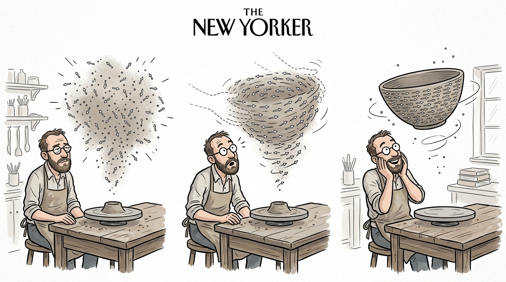
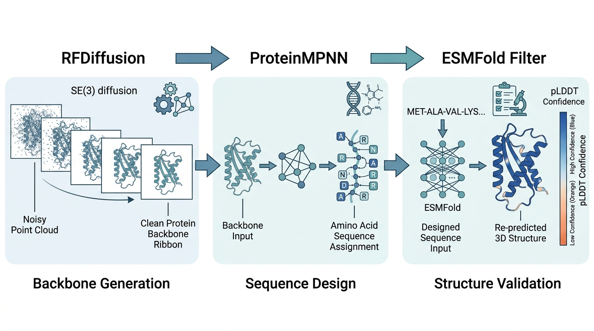

Protein structure prediction has been "solved" in the sense that AlphaFold2 predicts most single-chain structures to experimental accuracy. But prediction was never the end goal; it was a prerequisite. The real revolution is protein design: creating novel proteins with specified structures and functions that do not exist in nature. This section traces the arc from prediction (AlphaFold2/3, ESMFold) through generation (RFDiffusion, FrameDiff, FoldFlow) to design (ProteinMPNN, LigandMPNN), giving you the tools to build proteins computationally.
1. Protein Structure Primer
A string of just 100 amino acids can fold into more possible shapes than there are atoms in the observable universe, yet cells reliably produce the same structure every time; understanding how sequence dictates fold is the key that unlocked both prediction and design. Structure is described at four levels:
- Primary: the amino acid sequence, a string over a 20-letter alphabet.
- Secondary: local structural motifs, primarily alpha-helices and beta-sheets, determined by backbone hydrogen bonding patterns.
- Tertiary: the full 3D arrangement of a single chain, specified by the coordinates of every atom (or, more compactly, by backbone torsion angles \(\phi\), \(\psi\), \(\omega\)).
- Quaternary: the arrangement of multiple chains in a complex.
The backbone geometry of each residue is described by three dihedral angles. The peptide bond angle \(\omega\) is nearly always 180 degrees (trans configuration), leaving two degrees of freedom per residue: \(\phi\) (rotation around the N-C\(_\alpha\) bond) and \(\psi\) (rotation around the C\(_\alpha\)-C bond). The Ramachandran plot, a two-dimensional map of sterically allowed \((\phi, \psi)\) combinations for each residue, shows which \((\phi, \psi)\) pairs are energetically favorable and which are forbidden by atomic clashes (see Section 33.3 for geometric constraints in molecular representations).
The protein structure prediction problem asks: given a sequence, what 3D structure does it fold into? The protein design problem asks the inverse: given a desired 3D structure (or function), what sequence will fold into it? These are fundamentally different computational challenges. Prediction is a many-to-one mapping (many sequences fold similarly); design is a one-to-many problem (many sequences can realize a given fold). AI has solved prediction; it has made design tractable.
2. AlphaFold2: The Prediction Revolution
Before AlphaFold2, determining a single protein structure could take a graduate student an entire PhD and hundreds of thousands of dollars in synchrotron time; without that structure, drug designers were working blind, unable to see the molecular surface they needed to target. The ability to predict structure from sequence alone changed the economics of structural biology overnight.
AlphaFold2 (AF2) predicts protein structures with accuracy matching X-ray crystallography (median Global Distance Test Total Score (GDT-TS) > 92 on CASP14 free-modeling targets), where CASP14 is the 14th round of the Critical Assessment of protein Structure Prediction, a biennial blind competition that benchmarks structure prediction methods against unpublished experimental structures . Its architecture has two key innovations:
2.1 The Evoformer
AF2 processes two representations simultaneously. The first is a multiple sequence alignment (MSA) representation (a table of evolutionarily related protein sequences aligned position by position, so that each column corresponds to the same structural site) of shape \((N_{\text{seq}}, L, c_m)\). The second is a pair representation of shape \((L, L, c_z)\), where \(L\) is the sequence length. The evoformer block updates both through alternating attention operations:
- Row-wise MSA attention: each row of the MSA (a homologous sequence) attends to other positions within the same row, biased by the pair representation. This captures intra-sequence correlations.
- Column-wise MSA attention: each column of the MSA (a position across homologs) attends to the same position in other sequences. This captures evolutionary covariation, the signal that two positions covary across evolution because they are in spatial contact.
- Pair update via outer product mean: the MSA representation updates the pair representation through an outer product of column vectors, converting coevolutionary signal into pairwise distance information.
- Triangle attention and updates: the pair representation refines itself through operations that enforce geometric consistency (if residues \(i\) and \(j\) are close, and \(j\) and \(k\) are close, this constrains the \(i\)-\(k\) distance).
Checkpoint
So far: the evoformer maintains two coupled representations (MSA rows/columns and residue pairs) and refines them through four alternating operations (row attention, column attention, outer product update, and triangle refinement) across 48 blocks, converting raw evolutionary signal into pairwise geometric information sufficient to determine 3D structure.
The pair representation \(z_{ij}\) encodes the relationship between every pair of residues. After 48 evoformer blocks, this representation contains sufficient information to determine the 3D structure.
2.2 Structure Module
The structure module converts the pair and MSA representations into 3D coordinates using Invariant Point Attention (IPA; "invariant" here refers to the fact that the final output is invariant to global coordinate changes, even though the internal computation is equivariant), which operates on rigid-body frames \((R_i, \mathbf{t}_i) \in \text{SE}(3)\), where SE(3) is the special Euclidean group in three dimensions representing all possible rotations and translations of a rigid body , attached to each residue. IPA computes attention scores using both the embedding space and the 3D coordinate space, ensuring that the attention is equivariant to global rotations and translations:
$$a_{ij} = \text{softmax}_j\left( \frac{1}{\sqrt{c}} \mathbf{q}_i^T \mathbf{k}_j + \sum_h w_h \| R_i^T (\mathbf{p}_{j}^{(h)} - \mathbf{t}_i) - R_j^T (\mathbf{p}_{i}^{(h)} - \mathbf{t}_j) \| + b_{ij} \right)$$where \(\mathbf{q}_i, \mathbf{k}_j\) are query and key vectors in embedding space, \(\mathbf{p}^{(h)}\) are learned 3D query/key points, \(R_i, \mathbf{t}_i\) are the current frame for residue \(i\), and \(b_{ij}\) is a bias from the pair representation. The structure module iterates 8 times, refining the frames from an initial identity-frame configuration to the predicted structure. In short: prediction collapses billions of years of folding physics into a single forward pass; design inverts that pass to write sequences nature never tried.
2.3 Using AlphaFold3
AlphaFold3 (AF3) extends prediction to biomolecular complexes: protein-protein, protein-ligand, protein-nucleic acid, and even post-translationally modified proteins. Its architecture replaces the structure module with a diffusion-based generator that denoises atom coordinates from Gaussian noise, conditioned on the evoformer output. This allows AF3 to handle arbitrary molecular entities (small molecules, ions, modified residues) without specialized structure modules for each. As of late 2024, open-source alternatives such as Chai-1 and Boltz-1 have emerged, offering comparable biomolecular complex prediction with fully open weights and training code, broadening access beyond the AlphaFold ecosystem.
from Bio.PDB import PDBParser, PDBIO
import subprocess
import json
def predict_structure_alphafold3(
sequences: list[str],
job_name: str = "af3_prediction",
output_dir: str = "./af3_output",
) -> dict:
"""Predict protein complex structure using AlphaFold3.
Accepts multiple sequences for complex prediction.
Returns paths to predicted structures and confidence scores.
Requires: AlphaFold3 installed with model weights.
"""
# Prepare input JSON for AF3
input_data = {
"name": job_name,
"modelSeeds": [42],
"sequences": [
{"proteinChain": {"sequence": seq, "count": 1}}
for seq in sequences
],
}
input_path = f"{output_dir}/{job_name}_input.json"
with open(input_path, "w") as f:
json.dump(input_data, f)
# Run AF3 prediction
subprocess.run([
"python", "-m", "alphafold3",
f"--json_path={input_path}",
f"--output_dir={output_dir}",
"--model_dir=/data/af3_weights",
], check=True)
# Parse results
result_dir = f"{output_dir}/{job_name}"
return {
"structure": f"{result_dir}/ranked_0.cif",
"confidence": _parse_af3_confidence(result_dir),
}
def _parse_af3_confidence(result_dir: str) -> dict:
"""Parse AlphaFold3 confidence metrics.
predicted Local Distance Difference Test (pLDDT): per-residue confidence (0-100, >90 is high confidence)
PAE: predicted aligned error between residue pairs
ipTM: interface predicted Template Modeling score (TM-score) for complex accuracy
"""
with open(f"{result_dir}/confidence.json") as f:
conf = json.load(f)
return {
"plddt_mean": sum(conf["plddt"]) / len(conf["plddt"]),
"iptm": conf.get("iptm", None),
"ptm": conf["ptm"],
}3. ESMFold: Fast Single-Sequence Prediction
ESMFold typically achieves near-AF2 accuracy on single-domain proteins (within 1-2 GDT points on CASP14 single-chain targets, though the gap widens for multi-domain and low-homology targets) without requiring multiple sequence alignments. Instead, it uses a protein language model (ESM-2, with up to 15 billion parameters) pretrained on millions of protein sequences via masked language modeling. The key insight: the internal representations of a large language model trained on evolutionary data implicitly encode the same coevolutionary information that AF2 extracts explicitly from MSAs.
As of 2024, EvolutionaryScale released ESM3, a multimodal generative model that jointly reasons over sequence, structure, and function, extending the ESM family beyond prediction into programmable protein design. ESMFold's practical advantage is speed. AF2 requires computing MSAs against sequence databases (minutes to hours per protein); ESMFold runs in under a second for typical proteins on a single GPU, a 100 to 1000x speedup that turns structure prediction from a batch job into a real-time filter. This makes ESMFold ideal for filtering large numbers of designed sequences (as we do in Section 48.5).
import torch
import esm
def predict_structure_esmfold(sequence: str) -> dict:
"""Predict protein structure using ESMFold.
Returns the predicted structure as a PDB string and
per-residue pLDDT confidence scores.
ESMFold processes a single sequence (no MSA needed),
making it 100-1000x faster than AlphaFold2 per prediction.
"""
model = esm.pretrained.esmfold_v1()
model = model.eval().cuda()
# Optionally reduce memory usage for long sequences
model.set_chunk_size(128)
with torch.no_grad():
output = model.infer_pdb(sequence)
# Extract per-residue confidence scores
with torch.no_grad():
result = model.infer(sequence)
plddt = result["plddt"].cpu().numpy().squeeze()
return {
"pdb_string": output,
"plddt_scores": plddt,
"mean_plddt": float(plddt.mean()),
}
def batch_predict_esmfold(
sequences: list[str],
min_plddt: float = 70.0,
) -> list[dict]:
"""Predict structures for many sequences and filter by confidence.
Used in design pipelines to rapidly assess whether designed
sequences are predicted to fold into the intended structure.
"""
model = esm.pretrained.esmfold_v1()
model = model.eval().cuda()
model.set_chunk_size(128)
results = []
for i, seq in enumerate(sequences):
with torch.no_grad():
output = model.infer(seq)
plddt = output["plddt"].cpu().numpy().squeeze()
mean_plddt = float(plddt.mean())
if mean_plddt >= min_plddt:
results.append({
"sequence": seq,
"index": i,
"mean_plddt": mean_plddt,
"pdb_string": model.output_to_pdb(output)[0],
})
return sorted(results, key=lambda x: x["mean_plddt"], reverse=True)
BioPython's Bio.PDB module provides structure parsing, RMSD
calculation, and contact map computation in a few lines:
from Bio.PDB import PDBParser, Superimposer
import numpy as np
def compute_rmsd(pdb_file1: str, pdb_file2: str) -> float:
"""Compute backbone root-mean-square deviation (RMSD) between two structures."""
parser = PDBParser(QUIET=True)
s1 = parser.get_structure("s1", pdb_file1)
s2 = parser.get_structure("s2", pdb_file2)
atoms1 = [a for a in s1.get_atoms() if a.name in ("N", "CA", "C", "O")]
atoms2 = [a for a in s2.get_atoms() if a.name in ("N", "CA", "C", "O")]
sup = Superimposer()
sup.set_atoms(atoms1, atoms2)
return sup.rms # RMSD in Angstroms
This replaces approximately 50 lines of manual coordinate extraction, Kabsch alignment, and RMSD computation. BioPython handles PDB format parsing, atom selection, and optimal superposition internally.
The three-stage protein design pipeline, from backbone generation through inverse folding to structure validation, is illustrated in Figure 48.2. The next two sections explain the generation and inverse-folding stages in detail; the figure provides a roadmap so you can see where each piece fits before diving in.
4. RFDiffusion: Generating Novel Protein Backbones
Predicting the structure of a known protein is powerful, but the greater prize is creating proteins that nature never built.
While AF2 and ESMFold predict the structure of natural proteins, RFDiffusion generates novel protein backbones that do not exist in nature. Built on the denoising diffusion framework from Chapter 34, RFDiffusion operates on the SE(3) manifold of rigid-body frames (as shown in Figure 48.2, Stage 1), diffusing protein backbone coordinates to noise and learning to reverse the process.
4.1 Diffusion on SE(3)
Each residue \(i\) is represented by a frame \(T_i = (R_i, \mathbf{t}_i) \in \text{SE}(3)\), where \(R_i \in \text{SO}(3)\) is a rotation matrix and \(\mathbf{t}_i \in \mathbb{R}^3\) is a translation. The forward diffusion process adds noise to both components:
$$\mathbf{t}_i^{(t)} = \sqrt{\bar{\alpha}_t}\, \mathbf{t}_i^{(0)} + \sqrt{1 - \bar{\alpha}_t}\, \boldsymbol{\epsilon}_i, \quad \boldsymbol{\epsilon}_i \sim \mathcal{N}(\mathbf{0}, \mathbf{I})$$For rotations, the noise is applied via the Lie algebra \(\mathfrak{so}(3)\), the tangent space of SO(3) at the identity that parameterizes infinitesimal rotations as 3D vectors :
$$R_i^{(t)} = R_i^{(0)} \cdot \exp\left(\sqrt{1 - \bar{\alpha}_t}\, \boldsymbol{\omega}_i\right), \quad \boldsymbol{\omega}_i \sim \mathcal{N}(\mathbf{0}, \sigma_t^2 \mathbf{I})$$where \(\exp(\cdot)\) is the exponential map from \(\mathfrak{so}(3)\) to SO(3). The reverse process uses RoseTTAFold as the denoising network, predicting clean frames from noisy frames at each diffusion timestep.
Mental Model

Think of SE(3) diffusion as sculpting from a fog of clay dust. Each residue starts as a grain of dust drifting in random position and orientation (pure noise). At each denoising step, the network nudges every grain toward a coherent shape, the way a potter's hands gradually compress loose clay into a recognizable bowl. The rotation component (SO(3)) controls the tilt of each grain; the translation component (\(\mathbb{R}^3\)) controls where it sits. Early steps establish the rough silhouette (helix here, sheet there), while later steps refine exact bond angles and inter-residue contacts. The critical difference from image diffusion: the "pixels" here are rigid bodies with orientation, so the noise schedule must respect curved geometry (the SO(3) manifold) rather than adding Gaussian noise in flat Euclidean space.
4.2 Design Modes
RFDiffusion supports several design modes, each specified by different conditioning:
- Unconditional generation: generate novel folds with no structural constraints. Specify only the desired length.
- Motif scaffolding: design a protein that places a functional motif (e.g., a binding epitope, where an epitope is the specific surface region recognized by an antibody or receptor) in a specified position within a novel scaffold . The motif residues are fixed; the surrounding structure is generated.
- Binder design: generate a protein that binds a specified target protein surface. The target structure is provided as context.
- Symmetric design: generate symmetric assemblies (dimers, trimers, icosahedral cages) with specified symmetry operations.
import subprocess
from pathlib import Path
def run_rfdiffusion(
output_dir: str,
contigs: str,
num_designs: int = 100,
target_pdb: str = None,
hotspot_residues: list[str] = None,
diffusion_steps: int = 50,
) -> list[str]:
"""Run RFDiffusion to generate protein backbone designs.
Args:
contigs: Residue specification string.
"100" = unconditional, 100 residues
"A1-50/0 70-100" = scaffold motif from residues 1-50
of chain A with 70-100 new residues
target_pdb: PDB file for binder design conditioning
hotspot_residues: Target residues to design binders against
diffusion_steps: Number of denoising steps (50 is standard)
Returns: list of paths to generated PDB backbone files
"""
cmd = [
"python", "scripts/run_inference.py",
f"inference.output_prefix={output_dir}/design",
f"inference.num_designs={num_designs}",
f"contigmap.contigs=[{contigs}]",
f"diffuser.T={diffusion_steps}",
]
if target_pdb is not None:
cmd.append(f"inference.input_pdb={target_pdb}")
if hotspot_residues is not None:
hotspots = ",".join(hotspot_residues)
cmd.append(f"ppi.hotspot_res=[{hotspots}]")
subprocess.run(cmd, check=True, cwd="/path/to/RFdiffusion")
# Collect generated backbone PDB files
output_path = Path(output_dir)
return sorted(str(p) for p in output_path.glob("design_*.pdb"))
# Example: unconditional generation of 100-residue proteins
backbones = run_rfdiffusion(
output_dir="./designs/unconditional",
contigs="100",
num_designs=50,
)
# Example: binder design against a target protein
binder_backbones = run_rfdiffusion(
output_dir="./designs/binders",
contigs="A1-150/0 70-100",
target_pdb="target.pdb",
hotspot_residues=["A30", "A33", "A34"],
num_designs=100,
)5. ProteinMPNN: From Backbone to Sequence
RFDiffusion generates protein backbones (3D coordinates without amino acid identities). The inverse folding problem asks: which amino acid sequence will fold into this backbone? ProteinMPNN solves this using a message-passing neural network that takes backbone coordinates as input and outputs a probability distribution over amino acids at each position.
Inverse folding finds a sequence that spontaneously folds into a given backbone. Generative models like RFDiffusion produce backbones with no associated sequence, and a protein cannot be synthesized without one. ProteinMPNN encodes the backbone as a spatial graph and predicts, residue by residue, which amino acid best satisfies local geometry and chemistry. Use inverse folding whenever you have a target backbone from any source; use direct sequence optimization when you lack a backbone and want to search sequence space via a fitness function.
The model processes the protein as a \(k\)-nearest-neighbor graph (a graph where each residue is connected to the \(k\) residues closest to it in 3D space) in 3D space. Each node (residue) receives messages from its spatial neighbors, and the network autoregressively samples amino acids conditioned on the backbone geometry and previously sampled residues:
$$p(\mathbf{s} \mid \mathbf{X}) = \prod_{i=1}^{L} p(s_i \mid s_{import subprocess
import json
def run_proteinmpnn(
pdb_path: str,
output_dir: str,
num_sequences: int = 8,
temperature: float = 0.1,
fixed_positions: dict = None,
) -> list[dict]:
"""Design sequences for a protein backbone using ProteinMPNN.
Args:
pdb_path: path to backbone PDB (from RFDiffusion or experiment)
num_sequences: number of diverse sequences to generate
temperature: sampling temperature (lower = more conservative)
fixed_positions: dict mapping chain to list of fixed residue indices
Returns: list of designed sequences with scores
"""
cmd = [
"python", "protein_mpnn_run.py",
"--pdb_path", pdb_path,
"--out_folder", output_dir,
"--num_seq_per_target", str(num_sequences),
"--sampling_temp", str(temperature),
"--seed", "42",
"--batch_size", "1",
]
if fixed_positions is not None:
# Write fixed positions JSON
fixed_path = f"{output_dir}/fixed_positions.json"
with open(fixed_path, "w") as f:
json.dump(fixed_positions, f)
cmd.extend(["--fixed_positions_jsonl", fixed_path])
subprocess.run(cmd, check=True, cwd="/path/to/ProteinMPNN")
# Parse output sequences
results = []
fasta_path = f"{output_dir}/seqs/{Path(pdb_path).stem}.fa"
with open(fasta_path) as f:
lines = f.readlines()
for i in range(0, len(lines), 2):
header = lines[i].strip()
sequence = lines[i + 1].strip()
# Parse score from header
score = float(header.split("score=")[1].split(",")[0])
results.append({
"sequence": sequence,
"score": score,
"recovery": _compute_sequence_recovery(pdb_path, sequence),
})
return sorted(results, key=lambda x: x["score"])Common Misconception
A common misconception is that a high pLDDT score from ESMFold (or AlphaFold) on a designed sequence proves the protein will fold correctly and function as intended. In reality, pLDDT measures only how confidently the prediction network places each residue, not whether the protein will actually fold in a test tube, remain stable at physiological temperature, or perform the desired catalytic or binding function. Designed proteins with pLDDT above 90 can still misfold, aggregate, or be non-functional; experimental validation remains essential, and metrics like circular dichroism (a spectroscopic technique that measures secondary structure content by detecting how a protein absorbs left- vs. right-polarized light), size exclusion chromatography (a separation method that confirms the protein is a single, well-folded species rather than a disordered aggregate), and binding assays are needed to confirm that a design works.
5.1 LigandMPNN
LigandMPNN extends ProteinMPNN to design sequences in the context of bound ligands (small molecules, metal ions, nucleic acids). The network receives both backbone coordinates and ligand atom positions, designing sequences that form favorable interactions with the ligand. This is essential for enzyme design (where the active site must accommodate a substrate) and receptor design (where the binding pocket must complement a drug molecule).
In practice, LigandMPNN is invoked with the same command-line interface as ProteinMPNN, with an additional flag pointing to the ligand coordinates. You supply a PDB file containing both the protein backbone and the bound ligand (or metal ion), and LigandMPNN conditions its sequence predictions on the ligand atoms within a specified distance cutoff (typically 4 to 5 angstroms). The key difference from vanilla ProteinMPNN: residues near the ligand receive context about the ligand's chemistry, so the designed sequences are more likely to form productive contacts (hydrogen bonds, hydrophobic packing, metal coordination) with the bound molecule. Use LigandMPNN instead of ProteinMPNN whenever your design target includes a non-protein component that the designed sequence must accommodate.
6. FrameDiff and FoldFlow: Alternative Generative Approaches
Backbone generation and inverse folding form the two core stages of the design pipeline, and multiple algorithms compete on the generation side.
RFDiffusion is not the only approach to protein backbone generation. Two alternatives offer different trade-offs:
FrameDiff formulates backbone generation as diffusion on the product manifold \(\text{SE}(3)^L\), where each residue has an independent frame. The key difference from RFDiffusion: FrameDiff uses a simpler network architecture (a modified version of IPA from AlphaFold2) and trains on the full PDB without requiring the RoseTTAFold backbone. This makes it easier to retrain on custom datasets. The trade-off is generally lower designability (the fraction of generated backbones for which ProteinMPNN can find a sequence that ESMFold predicts will refold to the intended structure) on unconditional generation benchmarks, though the gap varies by target topology.
Flow Matching as an Alternative
FoldFlow replaces diffusion with continuous normalizing flows on SE(3), using Riemannian flow matching. Instead of learning a denoising process, FoldFlow learns a vector field that transports samples from a simple base distribution to the data distribution along geodesics (shortest paths on a curved manifold) on the SE(3) manifold :
$$\frac{d T_i}{dt} = v_\theta(T_i, t), \quad t \in [0, 1]$$where \(v_\theta\) is a learned vector field on SE(3). Flow matching avoids the need for reverse-process simulation and can be more sample-efficient than diffusion.
The diffusion framework for protein design connects directly to Chapter 34. RFDiffusion is a conditional denoising diffusion probabilistic model (DDPM) operating on SE(3) rather than pixel space. The same principles apply: noise scheduling controls sample quality, classifier-free guidance (a technique that interpolates between conditioned and unconditioned predictions to strengthen adherence to a design specification) steers generation toward desired properties, and the number of diffusion steps trades generation quality against computational cost. The flow-matching alternative in FoldFlow connects to the continuous normalizing flows also covered in Chapter 34. The domain-specific contribution is the choice of manifold: SE(3) for rigid-body protein frames rather than \(\mathbb{R}^n\) for images.
7. The Structure-to-Function Gap
Current protein design tools have a critical limitation: correct folding does not guarantee correct function. A designed enzyme might fold into the intended shape yet fail to catalyze the target reaction because the backbone representation does not capture subtle electronic or dynamic effects. Bridging this gap requires:
- Molecular dynamics simulations to assess conformational dynamics and binding thermodynamics (connecting to Chapter 43).
- Quantum chemistry calculations for active-site electronic structure.
- Experimental validation, which remains the ultimate arbiter. The fastest path from design to experiment is the self-driving laboratory (Chapter 55).
In 2023, the Baker lab used RFDiffusion and ProteinMPNN to design a family of luciferase enzymes (proteins that produce light) with no sequence similarity to any natural luciferase. The pipeline generated 10,000 backbone scaffolds conditioned on the diphenylterazine substrate, designed 8 sequences per backbone with ProteinMPNN, filtered by ESMFold confidence (pLDDT > 80), and experimentally tested 7,648 designs. Of these, 6 showed luminescence activity, and the best was subsequently optimized through directed evolution to achieve brightness comparable to natural luciferases. The entire computational pipeline, from initial scaffold generation to experimental testing, took 3 weeks. A traditional enzyme-engineering campaign would require months of iterative mutagenesis.
Research Frontier
In late 2024, the Baker lab introduced RFDiffusion All-Atom (RFDiffusion-AA), which extends backbone diffusion to jointly generate protein backbones and small-molecule ligand poses in a single unified diffusion process (Krishna et al., "Generalized Biomolecular Modeling and Design with RoseTTAFold All-Atom," Science, 2024). Unlike the original RFDiffusion (which generates only protein backbone frames and relies on a separate docking step for ligands), RFDiffusion-AA diffuses over a combined representation of protein residue frames and ligand atom coordinates. This enables de novo design of enzyme active sites around a substrate, metal-binding proteins around a target ion, and protein-small molecule interfaces, all in one pass. Early benchmarks reported that RFDiffusion-AA designs achieved experimental success rates roughly two to five times higher than two-stage (generate-then-dock) pipelines for small-molecule binding tasks, though these results come from a limited set of targets and may not generalize broadly.
8. Discovery Workbench Integration
The Discovery Workbench gains a ProteinDesigner component that wraps
the RFDiffusion, ProteinMPNN, and ESMFold pipeline (Figure 48.2) into a single interface. Users
specify the design task (unconditional, motif scaffolding, or binder design), and
the component orchestrates backbone generation, sequence design, structure validation,
and ranking. All intermediate results are logged to the experiment registry for
provenance tracking. Figure 48.2.1 illustrates Protein design pipeline from backbone generation to sequence validation.

from discovery_workbench import Designer, ExperimentRegistry
class ProteinDesigner(Designer):
"""Protein design pipeline for the Discovery Workbench."""
def design_binder(
self,
target_pdb: str,
hotspot_residues: list[str],
num_backbones: int = 100,
seqs_per_backbone: int = 8,
min_plddt: float = 75.0,
) -> list[dict]:
"""Design proteins that bind a specified target.
Pipeline: RFDiffusion -> ProteinMPNN -> ESMFold filtering
"""
# Step 1: Generate backbones
backbones = run_rfdiffusion(
output_dir=self.work_dir / "backbones",
contigs="A1-150/0 70-100",
target_pdb=target_pdb,
hotspot_residues=hotspot_residues,
num_designs=num_backbones,
)
self.registry.log("backbone_generation", {"n": len(backbones)})
# Step 2: Design sequences for each backbone
all_designs = []
for bb_path in backbones:
seqs = run_proteinmpnn(
pdb_path=bb_path,
output_dir=self.work_dir / "sequences",
num_sequences=seqs_per_backbone,
)
for seq_info in seqs:
seq_info["backbone"] = bb_path
all_designs.extend(seqs)
self.registry.log("sequence_design", {"n": len(all_designs)})
# Step 3: Filter by ESMFold confidence
validated = batch_predict_esmfold(
[d["sequence"] for d in all_designs],
min_plddt=min_plddt,
)
self.registry.log("esmfold_filter", {
"input": len(all_designs),
"passed": len(validated),
})
return validatedTry It: Predict and Compare Protein Structures with ESMFold
Use ESMFold and BioPython to predict structures for related protein sequences and
analyze how sequence changes affect predicted fold confidence. This project requires
only a laptop with Python, PyTorch, and the esm and biopython
packages (no GPU required for short sequences under 200 residues using the ESM-2 650M
checkpoint).
- Pick two homologous sequences. Go to UniProt and retrieve the sequences for human lysozyme (P61626) and hen egg-white lysozyme (P00698). Save each as a plain string variable in a Python script.
- Predict both structures with ESMFold. Use
esm.pretrained.esmfold_v1()to predict the structure of each sequence. Save the output PDB strings to files (human_lyso.pdbandhen_lyso.pdb). - Extract and plot pLDDT profiles. For each prediction, extract the per-residue pLDDT scores. Plot both profiles on the same matplotlib figure (x-axis: residue index, y-axis: pLDDT). Identify regions where the model is most and least confident.
- Compute backbone RMSD. Using BioPython's
Superimposer(as shown in the Library Shortcut above), superimpose the two predicted structures and compute their backbone root-mean-square deviation (RMSD). A value under 1.5 angstroms confirms that the two homologs share a conserved fold despite ~60% sequence identity. - Mutate and re-predict. Introduce three alanine substitutions at positions in the hen lysozyme active site (e.g., positions 35, 52, 62) and re-run ESMFold. Compare the mutant pLDDT profile to the wild-type profile. Regions near the mutations should show reduced confidence, illustrating that ESMFold captures sequence-structure coupling even without explicit training on mutational data.
Exercise 48.2.1
You have generated 200 backbone structures with RFDiffusion and designed 8 sequences per backbone with ProteinMPNN (temperature = 0.1). You then run ESMFold on all 1,600 sequences and find that only 12 pass a pLDDT threshold of 80. You suspect the threshold is too strict, but lowering it risks advancing designs that will not fold experimentally. Propose a two-stage filtering strategy that balances throughput against experimental success rate, and explain which additional computational metric (beyond mean pLDDT) you would use at each stage to triage candidates.
Hint
Consider using per-residue pLDDT profiles rather than just the mean. A design with mean pLDDT of 75 but uniformly high scores everywhere except a flexible loop may be more promising than one with mean 82 but a large low-confidence core region. For the second stage, think about self-consistency: predict the structure with ESMFold, then run ProteinMPNN on the predicted structure and check whether the re-designed sequence recovers the original designed sequence (the "sc-TM" or "self-consistency TM-score" metric).
Step-Through: Autoregressive Sequence Sampling in ProteinMPNN
Trace through ProteinMPNN's autoregressive sampling on a toy 4-residue backbone. Suppose the backbone geometry yields these (simplified) conditional probability tables at temperature 0.1:
Position 1 (no prior residues): P(Ala) = 0.70, P(Val) = 0.20, P(Leu) = 0.10. Sample: Ala.
Position 2 (given s1 = Ala): P(Glu) = 0.55, P(Asp) = 0.30, P(Gly) = 0.15. Sample: Glu.
Position 3 (given s1 = Ala, s2 = Glu): P(Leu) = 0.60, P(Ile) = 0.25, P(Val) = 0.15. Sample: Leu.
Position 4 (given s1 = Ala, s2 = Glu, s3 = Leu): P(Lys) = 0.80, P(Arg) = 0.15, P(His) = 0.05. Sample: Lys.
Final sequence: AELK. Joint probability: 0.70 x 0.55 x 0.60 x 0.80 = 0.185. A second run with different random draws might yield DELK or AELR, illustrating how the same backbone produces diverse valid sequences. Note that each position's distribution is conditioned on the backbone geometry and all previously sampled residues, so earlier choices influence later ones.
Real-World Application: Designing COVID-19 Therapeutic Binders
In 2023, researchers at the Institute for Protein Design used RFDiffusion and ProteinMPNN to design de novo protein binders targeting the SARS-CoV-2 spike protein's receptor-binding domain. The pipeline generated thousands of candidate binders, filtered them computationally with ESMFold and Rosetta binding energy calculations, and experimentally validated the top candidates. Several designs achieved picomolar binding affinity (comparable to monoclonal antibodies) while being smaller, more thermostable, and cheaper to manufacture, demonstrating that AI-driven protein design can produce therapeutic candidates on a timeline of weeks rather than the months required by traditional antibody discovery.
The Billion-Year Shortcut
Natural evolution has explored roughly 10^43 of the possible 20^100 sequence combinations for a typical 100-residue protein over 3.8 billion years. The Protein Data Bank (PDB), humanity's total catalog of experimentally determined structures, contains about 230,000 entries (circa 2024). RFDiffusion can generate 10,000 novel, designable backbones in under an hour on a single GPU, many with folds never observed in nature. Put differently, one afternoon of GPU time can produce more structurally unique protein architectures than evolution managed to preserve across the entire tree of life. The catch: evolution tested its designs with billions of years of selective pressure; we still need a week in the wet lab.
Lab: Inverse Folding with ESM-IF1
Goal: Given a known protein backbone, use inverse folding to redesign its sequence and evaluate whether the redesigned sequence is predicted to fold back into the original structure.
Tools: Python, PyTorch, the esm package
(pip install fair-esm or, as of 2024, pip install esm from the EvolutionaryScale fork), BioPython, and matplotlib. A GPU is helpful but
not required for proteins under 150 residues.
Protocol (20 minutes): (1) Download a small, well-characterized
protein structure from the PDB (e.g., villin headpiece, PDB ID 1VII, 36 residues).
(2) Use ESM-IF1 (esm.pretrained.esm_if1_gvp4_t16_142M_UR50()) to
generate 16 redesigned sequences at temperature 0.1 and temperature 0.5.
(3) For each redesigned sequence, predict the structure with ESMFold and compute
the backbone RMSD against the original PDB structure using BioPython's Superimposer.
(4) Plot a scatter chart of RMSD vs. ESM-IF1 sequence log-likelihood score, coloring
points by temperature.
What to vary: Sampling temperature (0.05, 0.1, 0.2, 0.5, 1.0). What to observe: At low temperature, sequences cluster near the native sequence with low RMSD; at high temperature, you get more sequence diversity but RMSD increases. Identify the temperature "sweet spot" where you achieve at least 30% sequence divergence from native while maintaining RMSD below 1.5 angstroms.